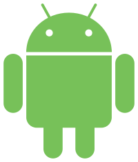

<!DOCTYPE html>
<html lang="en">
<head>
    <meta charset="UTF-8">
    <title>Title</title>
    <script src="../glitterBundle/ControlInstance.js"></script>
    <link href="../glitterBundle/bootstrap.css" rel="stylesheet">
    <link href="../fontawesome-free-5.15.4-web/css/all.min.css" rel="stylesheet">
    <script src="https://cdn.jsdelivr.net/npm/marked/marked.min.js"></script>

    <link rel="stylesheet" href="https://cdnjs.cloudflare.com/ajax/libs/highlight.js/10.7.1/styles/xcode.min.css">
    <script src="https://cdnjs.cloudflare.com/ajax/libs/highlight.js/10.7.1/highlight.min.js"></script>
    <!-- and it's easy to individually load additional languages -->
    <script src="https://cdnjs.cloudflare.com/ajax/libs/highlight.js/10.7.1/languages/go.min.js"></script>
</head>
<style>
    html {
        user-select: text;
        -webkit-user-select: text;
        height: 100%;
        background-color: transparent;
        width: calc(100% - 20px);
        overflow-y: scroll;
        margin-top: 20px;
        text-align: left;
        padding-top: 50px !important;

    }

    body {
        width: 100%;
        transform: translateX(-50%);
        left: 50%;
        position: relative;
        user-select: text;
        -webkit-user-select: text;
        max-width: 800px;
        height: 100%;
        background-color: transparent;
    }

    span {
        font-size: 15px;
        letter-spacing: 1px;
        color: #233659;
    }

    .js {
        text-align: left;
    }

    pre {
        text-align: left;
    }

</style>
<body>
<script>
    lifeCycle.onCreate = function () {
        hljs.highlightAll();
        getData();
    }
    lifeCycle.onCreateView = function () {
        return `
        <h3 style="font-size: 39px;font-weight: 400;">Bluetooth<br><div style="display: flex;height: 50px;align-items: center;"><span>\t\tSupport</span>
        </div></h3>
    <div style="height: 1px;width: 100%;background-color: whitesmoke;margin-top: 20px;margin-bottom: 20px;"></div>
<h3 style="color: #c41b1b;">Android Config</h3><br>
     <a style="font-size: 15px;" onclick="glitter.openNewTab('https://github.com/sam38124/Glitter_Android')">Github resources</a>
 <br>
   <div style="height: 1px;width: 100%;background-color: whitesmoke;margin-top: 20px;"></div>
<br>
 <span>Add into your build.gradle</span>
   <br>  <br>
 ${glitter.share.code.kotlin(`allprojects {
\t\trepositories {
\t\t\t...
\t\t\tmaven { url 'https://jitpack.io' }
\t\t}
\t}
`)}
  <br>
<span>Add into your dependencies</span>
   <br>  <br>
   ${glitter.share.code.kotlin(`dependencies {

    implementation 'com.github.sam38124:Glitter_Plugin_Bluetooth:1.2.0'

}
`)}<br>
   <span>Code initial</span><br><br>
      ${glitter.share.code.kotlin(`Glitter_BLE(applicationContext).create()
`)}<br>
   <div style="height: 1px;width: 100%;background-color: whitesmoke;margin-top: 20px;margin-bottom: 20px;"></div>
<h3 style="color: #c41b1b;">IOS Config</h3><br>
     <a style="font-size: 15px;" onclick="glitter.openNewTab('https://github.com/sam38124/Glitter_IOS_Plugin_Bluetooth')">Github resources</a>
 <br>
   <div style="height: 1px;width: 100%;background-color: whitesmoke;margin-top: 20px;"></div>
<br>
 <span>Add into your Xcode</span>
   <br>  <br>
 ${glitter.share.code.div(`<span style="color: dodgerblue;">https://github.com/sam38124/Glitter_IOS_Plugin_Bluetooth</span>
`)} <br>
  <span>Code initial</span><br><br>
      ${glitter.share.code.swift(`Glitter_BLE.getInstance().create()
`)}<br>
    <div style="height: 1px;width: 100%;background-color: whitesmoke;margin-top: 20px;margin-bottom: 20px;"></div>

<h3 style="color: #c41b1b;">Start</h3>
<span>CDN</span>
   <br>  <br>
 ${glitter.share.code.div(`<span style="color: dodgerblue;">https://www.squarestudio.tw/Glitter_Library/BLE_Plugin/GlBle.js</span>
`)}
 <br><br>
  ${glitter.share.code.js(`
  glitter.addMtScript(['plugins/GlBle.js'], function () {
        //BLE框架導入成功
    }, function () {
        //BLE框架導入失敗
    })
`)}
 <br>
<p>定義藍芽回調函式</p><br>
<pre>
<code class="js">
glitter.share.bleCallBack.rx = function (data) {
    //藍芽資料回調，有三種讀取方式
    //readUTF,readBytes,readHEX
    console.log(data.readUTF)
}

glitter.share.bleCallBack.tx = function (data) {
    //藍芽資料傳送監聽，有三種讀取方式
    //readUTF,readBytes,readHEX
    console.log("bleMessage_tx:" + data.readHEX)
}

glitter.share.bleCallBack.onDisconnect = function () {
    //藍芽斷線
    console.log("bleMessage_onDisconnect")
}
glitter.share.bleCallBack.onConnectSuccess = function () {
    //藍芽連線成功回條
    console.log("onConnectSuccess")
}

glitter.share.bleCallBack.needGPS = function () {
    //Android特有，android 6.0 以後必須打開定位才能啟用藍芽掃描功能，因為藍芽有室內定位的功能
}

glitter.share.bleCallBack.requestPermission = function (array) {
   //Android特有 當用戶未允許權限開啟時進行回條
   //調用glitter.requestPermission進行權限請求
   glitter.requestPermission(array)
}

glitter.share.bleCallBack.scanBack = function (device, scanRecord, rssi) {
    //藍芽掃描回條(可以將Device放進陣列儲存起來方便日後連線)
    //device中包含{"address","name"}
    //scanRecord為廣播封包包含{"readUTF","readBytes","readHEX"}
}
<br>
</code>
</pre><br>
<p>判斷是否要開啟定位功能(Android 6.0以上的手機必須打開定位才能啟用藍芽掃描功能)</p><br>
<pre>
<code class="js">
 glitter.share.bleUtil.needOpenGps({
        callback:function (response){
            if(response.result){
                alert("請打開GPS來啟用藍芽功能")
            }
        }
    })<br>
</code>
</pre><br>
<p>開始掃描藍芽</p><br>
<pre>
<code class="js">
   glitter.share.bleUtil.startScan({
        callback:function (response){
            if(response.result){
             console.log("正在掃描藍芽")
            }
        }
    })<br>
</code>
</pre><br>
<p>判斷藍芽是否正在掃描</p><br>
<pre>
<code class="js">
glitter.share.bleUtil.isDiscovering({
    callback:function (response){
        if(response.result){
            console.log("on scanning")
        }else{
            console.log("not scanning")
        }
    }
})
   <br>
</code>
</pre><br>
<p>連線藍芽</p><br>
<pre>
<code class="js">
 glitter.share.bleUtil.connect({
        data:{
              address: glitter.bleList[pos].address,
              timeOut: 10
              },
        callback:function (response){
            if(response.result){
                console.log("藍芽連線成功")
            }else{
                console.log("藍芽連線失敗")
            }
        }
    })<br>
</code>
</pre><br>
<p>判斷藍芽是否已連線</p><br>
<pre>
<code class="js">
 glitter.share.bleUtil.isConnect({
        callback:function (response){
            if(response.result){
                console.log("藍芽已連線")
            }else{
                console.log("藍芽尚未連線")
            }
        }
    })<br>
</code>
</pre><br>
<p>傳送訊息</p><br>
<pre>

<code class="js">
//3種方式傳送訊息給藍芽
//txChannel為你要傳送資料的特徵值，由藍芽開發者定義
//rxChannel為你要接收資料的特徵值，由藍芽開發者定義
 glitter.share.bleUtil.writeHex({
        data:{
            data:(data),
            txChannel:"00008D82-0000-1000-8000-00805F9B34FB",
            rxChannel:"00008D81-0000-1000-8000-00805F9B34FB"
        }
    })
     glitter.share.bleUtil.writeBytes({
        data:{
            data:(data),
            txChannel:"00008D82-0000-1000-8000-00805F9B34FB",
            rxChannel:"00008D81-0000-1000-8000-00805F9B34FB"
        }
    })
     glitter.share.bleUtil.writeUtf({
        data:{
            data:(data),
            txChannel:"00008D82-0000-1000-8000-00805F9B34FB",
            rxChannel:"00008D81-0000-1000-8000-00805F9B34FB"
        }
    })
 <br>
</code>
</pre>
`
    }

    function getData() {
        $.ajax({
            url: '../text/HelloWorld.html',
            timeout: 60000,
            contentType: "application/text; charset=utf-8;",
            type: "get",
            dataType: "text",
            success: function (data) {
                $('#codeInside').text(data)
            },
            error: function (data) {
                error()
                console.log("error:" + data)
            }
        });
    }
</script>
</body>
</html>